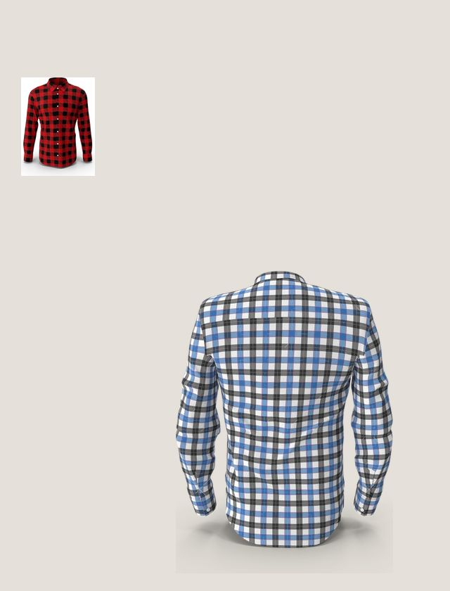
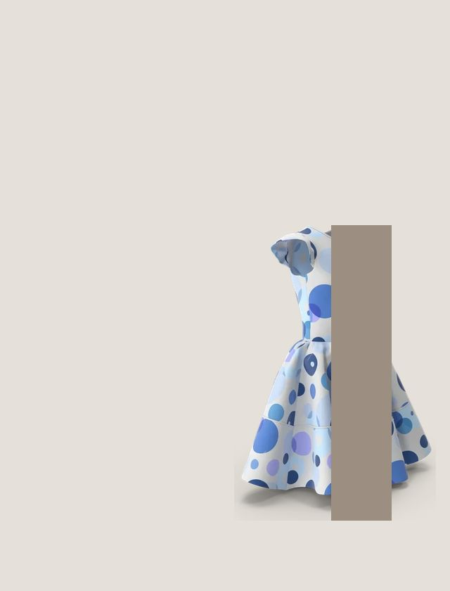
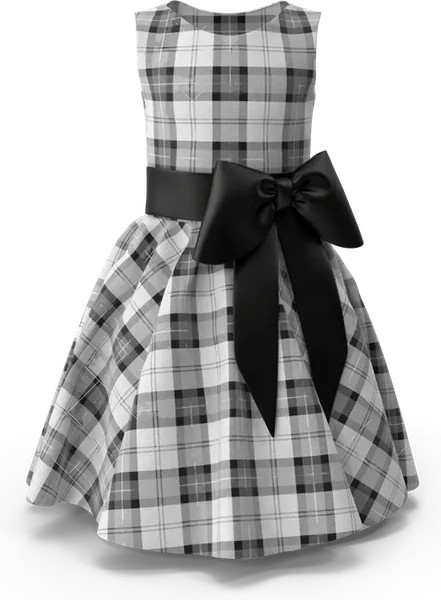

IoU 0.292 · 1136 ms
เขียวเส้นทึบ = เฉลย · ส้มเส้นประ = โมเดล · ภาพที่ไม่มีกรอบสีเขียวคือกรณีที่สินค้าเป้าหมายไม่ปรากฏ
IoU 0.292 · 1136 ms

IoU 0.346 · 1042 ms

IoU 0.342 · 1199 ms
IoU 0.000 · 1053 ms

IoU 0.550 · 1484 ms
ภาพต้นฉบับ · Ministerio de Relaciones Exteriores del Perú (Cancillería del Perú) · CC BY-SA 2.0 · ปรับขนาดและซ้อนกรอบเพื่อวัดตำแหน่ง
IoU 0.178 · 1311 ms
ภาพต้นฉบับ · Ministerio de Relaciones Exteriores del Perú (Cancillería del Perú) · CC BY-SA 2.0 · ปรับขนาดและซ้อนกรอบเพื่อวัดตำแหน่ง
IoU 0.515 · 1184 ms

IoU 0.018 · 1100 ms
เว้นกรอบถูกต้อง · 877 ms
Steve Jobs Headshot 2010.JPG · Matthew Yohe at en.wikipedia · CC BY-SA 3.0 · ปรับขนาดและซ้อนกรอบเพื่อวัดตำแหน่ง
มีกรอบทั้งที่สินค้าไม่อยู่ในภาพ · 1202 ms

มีกรอบทั้งที่สินค้าไม่อยู่ในภาพ · 1509 ms

มีกรอบทั้งที่สินค้าไม่อยู่ในภาพ · 1135 ms
ภาพสินค้าและฉากจำลองดัดแปลงจาก DummyJSON มีการปรับขนาดและซ้อนกรอบเปรียบเทียบ